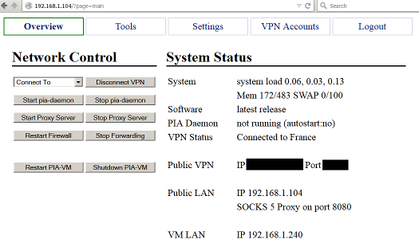
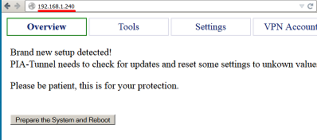
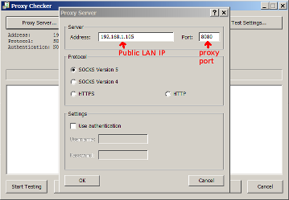
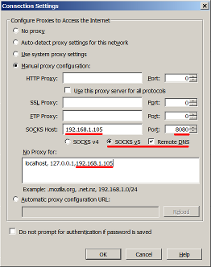
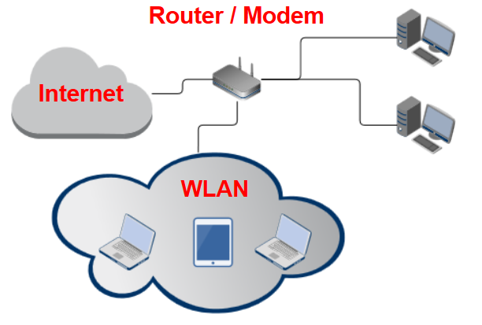
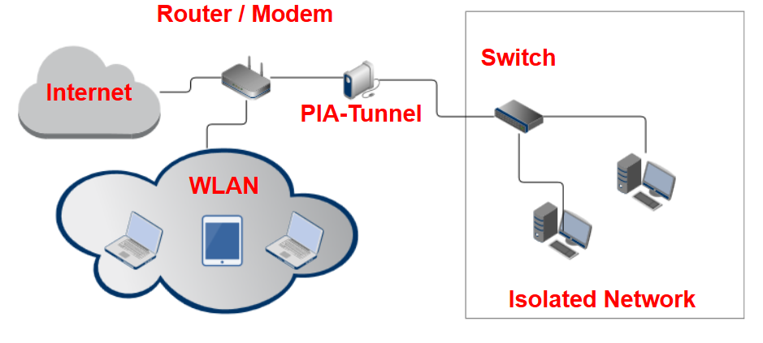
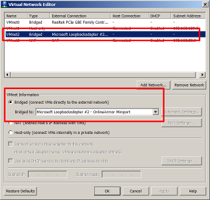
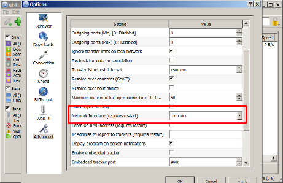

PIA-Tunnel Documentation
This documentation is work in progress. Some sections may not have been verified yet or are still
being tested.
Overview
Back To Top
PIA-Tunnel is a series of scripts designed to share an openVPN connection with your network.
It supports port forwarding, failover locations, LAN segments and a SOCKS5 proxy.
The included web interface makes it easy to setup connections and get the system configured to
your network.
The included shell scripts make it possible to control the system from the command line as well.
PIA-Tunnel started out as a virtual machine for VMware Workstation, Player and ESXi but
is now being used on KVM, XEN, Hyper-V and other solutions.
PIA-Tunnel is currently being tested on a Raspberry Pi 1 Model B+, with promising results.
The combination turns PIA-Tunnel into a stand alone VPN router for your network.
Advanced setups may utilize two network adapters to completely isolate a network or system.
Features
- Open by design! PIA-Tunnel is script based and you may roll your own installation
by following the steps in 'Clean Installation Steps.txt'
- Complete network isolation with VM LAN segment (leak protection)
- Simple Web-interface and/or command line support
- SOCKS 5 proxy for LAN or VM LAN segment. proxifier.com compatible
- Port forwarding to 1 IP on your LAN or private VM LAN
- Runs on existing hardware, your Computer, Laptop or Homeserver
- Requires 1 CPU core, 256MB RAM and less then 2GB free drive space
- Supports PrivateInternetAccess.com and FrootVPN.com out of the box

Virtual Machine Setup
Back To Top
- Download the compressed OVF Template from http://www.kaisersoft.net/r/?PIAIMG
- Extract the 7-Zip archive. 7-Zip is a free compression utility http://www.7-zip.org
VMware Workstation and Player
- Add the OVF Template to VMware Workstation or Player by double clicking on "PIA-Tunnel.ovf" then on "Import".
- Ensure that the second network adapter is a member of a private LAN segment
- Select "Network Adapter 2"
- Click "LAN Segments" => "Add"
- Enter name of LAN segment. For example: "VPN Bridge"
- Click OK to close
- Use Dropdown to select the LAN segment you just created and click OK
Note: Connect client VMs to this LAN segment and remove or disable their other network cards for complete isolation.
ESXi
- Setup private VM LAN segment first using vSphere Client
- select your ESXi server and choose "Configuration"
- Click on "Networking" => "Add Networking..."
- "Virtual Machine" => "Create a vSphere standard switch" uncheck any selected interfaces!
NOTE: The preview must list "No adapters" on the "Physical Adapters" side!
- Enter a network name. For example VPN Network - PIA
- Import the OVF Image
- Extract the file you downloaded. You should now have a folder with tree files
- "File" => "Deploy OVF Template..."
- Browse to the extracted files and select "PIA-Tunnel.ovf" => "Next" => "Next"
- Give the VM a name and select a datastore to keep the machine on => "Next"
- Use "Thin Provision" since the VM will not change much
- Select your external Network on the "Network Mapping" screen
- Do not auto power the machine once deployment is complete
- Configure the VM
- Select the VM => "Edit Settings"
- Make sure that "Network adapter 1" is connected to the network with Internet access and that "Network adapter 2" is connected to the private LAN segment you created in step 1 above.
- RAM should be set to at least 256MB RAM. You may set it to as little as 92MB if you don't intend to run the SOCKS proxy server.
WARNING: Do not connect both interfaces to the same network. It will create
routing conflicts and the VPN will fail to connect.
Remove the second network card if you don't intend use network isolation. You may always add
the interface later.
Power on / starting PIA Tunnel VM
Back To Top
WARNING: Do not connect both interfaces to the same network. It will create
routing conflicts and the VPN will fail to connect.
Remove the second network card if you don't intend use network isolation. You may always add
the interface later.
- Verify that the machine has one CPU and at least 256MB of RAM.
- Start the VM and wait until you see Public LAN IP

- Open the Public LAN IP in your web browser
- The PIA-Tunnel Management Interface should open and prompt you to reset your system.
This step is NOT OPTIONAL so click on Prepare the System and Reboot to continue.
- Wait until you see pia-tunnel login: again, then refresh the page.
- The PIA-Tunnel Setup Wizard will now open.

Setup Wizard
Back To Top
The PIA-Tunnel Setup Wizard will be executed every time the VM is reset. It ensures that the basic configuration options are set properly.
- Web-UI Username and Web-UI Password
Access to the Web-UI will be restricted to this user.
- VPN Username and VPN Password
Please enter your PIA username and password into these fields
- VPN Gateway for public LAN
Set this option to yes if you want to share the VPN connection with other computers on your network.
- VPN Gateway for VM LAN
Set this option to yes if you want to share the VPN connection with a private VM LAN segment
- root password
- This option will change the default root password from pia to something sane. You may enter your own password or accept the randomly generated one.
NOTE: The web GUI is supposed to replace any command line interaction so I recommend that you accept the generated password. You may reset the root password later via the Tools menu.
PIA-Tunnel WebUI - Management Interface
Back To Top
The WebUI should work with any basic HTML5 browser, even with javascript disabled. Enabling javascript will activate the advanced UI which will reconfigure some UI elements, enable automatic Network Status updates and make the Settings page easier to use.
Settings - General Settings
Back To Top
These are the important settings for PIA-Tunnel. Please take a moment to understand what they do.
-
VPN Gateway for VM LAN: <yes/no;> (default: yes)
Setting this option to yes will share the VPN connection with any computer on your private VM LAN Segment. The LAN segment is called VPN Bridge in the setup portion of this guide.
-
VPN Gateway for public LAN: <yes/no> (default: yes)
Setting this option to yes will share the VPN connection with any computer on your public LAN Segment. This is your home network, so any computer that may use your current Internet connection will be able to use PIA-Tunnel to access the VPN.
-
Allow web-UI access on: <eth0> <eth1> (default: both checked)
This option will open port 80 on the selected interfaces. This is needs to be enabled if you want to use the web-UI to mange PIA-Tunnel and if you want to use Torrent Monitor client.
Warning: Unchecking both options will prevent you from accessing the web-UI. You may regain access by adding FIREWALL_IF_WEB[0]=eth0 back into /usr/local/pia/settings.conf
-
Allow ssh connections on: <eth0> <eth1> (default: both NOT checked)
Same as Allow web-UI access but for port 22, remote SSH access. Dont enable this if you dont know what SSH is or if you dont indent to use it.
-
Web-UI Username and Web-UI Password
This option specifies the username and password for the Web-UI. Note: You may reset the password by setting the following options to nothing in /usr/local/pia/settings.conf
WEB_UI_USER=
WEB_UI_PASSWORD=
-
Remember Me for: <some integer> (default: 120) days
No login required for this many days. Set to 0 (zero) to disable this feature.
Settings - PIA Daemon Settings
Back To Top
PIA Daemon is a script that may be used to keep your network connected to the VPN.
It will test the VPN connection every few minutes, stop all VPN forwarding on error and attempt to reconnect when the connection is down.
-
Start after OS boot: <yes/no> (default: yes)
PIA-Tunnel VM will attempt to establish a VPN after the operating system has finished booting. Once this option is enabled, you only need to turn on the virtual machine and the VPN connection will be established a few minutes later.
-
Failvoer 0 n
These are the locations pia-daemon will use to initiate a VPN connection. Connections are used in sequence so pia-daemon will always create the initial connection with Failover 0, try Failover 1 if the connection fails and so on.
Setting Failover n to an empty value will remove the Failover setting entirely.
Warning: Locations marked with a * support port forwarding. Keep in mind that the open network port is assigned to you by your VPN provider and will change when you connect to a different location! I provide a monitoring script to detect these port changes, reconfigure your torrent client and restart the application.
Please see Starting your Torrent client with monitor.vbs for details.
Settings - Advanced Settings
Back To Top
The advanced settings are below the General Settings. Click on Show Advanced Settings to display the options.
WARNING: You can really mess things up in here and may even compromise your security by changing the wrong option.
-
Enable Port Forwarding : <yes/no> (default: no)
This option enables port forwarding to a computer connected to PIA-Tunnel. Only set this to yes if you intend to run a server or torrent client. Please see Running a Server or Torrent Client for details
-
Forward IP: <some IP> (default: 192.168.10.100)
This is the target IP of the open port. The option is only available when Enable Port Forwarding is set to yes.
- Public LAN interface: <eth0/eth1/tun0> (default: eth0)
Specifies which interface is connected to your public LAN.
WARNING: Dont change this!
- VM LAN interface: <eth0/eth1/tun0> (default: eth1)
Specifies which interface is connected to the private VM LAN segment.
WARNING: Dont change this!
- VPN interface: <eth0/eth1/tun0> (default: tun0)
Specifies which interface will be handling the VPN connection.
WARNING: Dont change this!
- eth0 use DHCP: <yes/no> (default: yes)
Allows you to configure a fixed IP for eth0 or use an existing DHCP server. This interface will be connected to your LAN where your cable/DSL router is providing DHCP service. Dont change this unless you need to set a static IP.
- eth0 IP/Subnet/Gateway (default: all empty)
These options are enabled when eth0 use DHCP is set to no.
- eth1 use DHCP: <yes/no> (default: no)
Allows you to configure a fixed IP for eth1 or use an existing DHCP server. This interface is connected to your private VM LAN segment without a DHCP server. PIA-Tunnel provides DHCP service for this segment so the IP must be fixed.
I recommend that you dont change this unless you know networking.
- eth1 IP/Subnet/Gateway (default: IP:192.168.10.1 Subnet: 255.255.255.0 Gateway: empty)
These options are enabled when eth1 use DHCP is set to no.
- DNS 1-4
Specifies the DNS servers used by PIA-Tunnel VM. The VM ships with the following defaults:
8.8.8.8 is a public DNS Server hosted by Google.com
208.67.222.222 is a public DNS Server hosted by OpenDNS.com
8.8.4.4 is a public DNS Server hosted by Google.com
208.67.220.220 is a public DNS Server hosted by OpenDNS.com
- Max allowed packet loss: <0%-100%> (default: 20%)
Specifies how many ping packets may be lost, per check, before pia-daemon considers the VPN connect as down/bad. Pia-daemon will attempt to connect to Failover 1 through n when the ping failure rate is above this threshold.
- Verbose / Debug Verbose: <yes/no> (default: no)
Enables verbose or verbose debug mode on the command line. This option is not used by the web-UI.
Settings - DHCP Server Settings
Back To Top
This box gives you access to the configuration file of the DHCP Server running inside PIA-Tunnel.
The current UI supports up to two subnets.
Please contact support (from Tools page) if you require more subnet options.
- Subnet 1: <enabled/disabled> (default: enabled)
Adds the following settings to the configuration file if enabled or removes them when disabled.
- Subnet IP 1: <IP Address> (default: 192.168.10.0)
IP address of the network
- Subnetmask 1: <IP Address> (default: 255.255.255.0)
Subnetmask used by any DHCP clients on your network
- Broadcast IP 1: <IP Address> (default: 192.168.10.255)
Broadcast IP used by any DHCP clients on your network
- Router/Gateway 1: <IP Address> (default: 192.168.10.1)
Gateway IP used by any DHCP clients on your network
- IP Range 1: <IP_Address IP_Address>> (default: 192.168.10.1
01 192.168.10.151)
Range of IPs used by the DHCP server.
Please note the format of <IP Address><SPACE><IP Address>
- Subnet 2: <enabled/disabled> (default: disabled)
You may setup a second IP Range using the Subnet 2 option.
Warning: Only use this if you know networking!
- Subnet IP/Subnetmask/Broadcast IP/Router/Gateway/IP Range
Same definition as Subnet 1 but the settings must not define the same range.
Warning: Only use this if you know networking!
- Fixed IP: <IP Address> (default: empty)
Specifies one fixed IP that will be assigned to a computer with a MAC address matching the MAX for IP setting. You should also enter this IP into Forward IP found in General Settings
- MAC for IP: <MAC Address> (default: empty)
Specifies which computer will receive the Fixed IP specified above.
Please note: The MAC Address must be separated by colons (:). Example: 00:0D:28:A7:3C:45
Configure Client Devices to use the VPN
Back To Top
WARNING: Do not connect both interfaces to the same network. It will create
routing conflicts and the VPN will fail to connect.
Remove the second network card if you don't intend use network isolation. You may always add
the interface later.
PIA-Tunnel may share your VPN connection as a SOCKS5 proxy server or as a default gateway for your nework.
-
Using the build in SOCKS5 proxy server is very easy to setup but every program needs to be configured individually. This options works great if you want to switch your webbrowser to use the VPN but does not support incoming port forwarding.
-
PIA-Tunnel as a default gateway for the rest of your network. The computer sharing the connection needs to have two ip addresses. One will be used to create the VPN connection and the other is used by your clients to access the VPN.
PIA-Tunnel is designed for this environment and supports all features when setup this way.
SOCKS5 Proxy Setup
Back To Top
Using the SOCKS5 proxy is a great way to get around country blocks without major changes.
Simply change your browser settings and your are done.
This option may also be used on a device that is already setup
as a default gateway for your network.
- Goto "Settings" and set "Enable Port Forwarding" to "no"
- Goto "Settings" => "SOCKS5 Proxy Server" and set "Public LAN" to enable
- Disconnect or change your current VPN connection. The SOCKS5 server will be started once the VPN connection is established.
- All done. Use the "Public LAN IP" and the SOCKS5 port in your browser or other programs that support SOCKS5 servers.
Proxychecker is a free tool to check if everything is working properly.


Example of the required settings for FireFox. Don't forget to exclude the Public LAN IP or you will not be able to access the webUI while using the proxy ("No Proxy for" box).

Default Gateway Setup
Back To Top
PIA-Tunnel is primarily designed to act as a default gateway for one or
more client devices on your network.
Unlike the SOCKS5 proxy, which needs to be configured per program.
The default gateway is an operating system setting that is configured once.
It forces your programs to send all traffic through the default gateway, the VPN tunnel.
The basic configuration makes use of one network adapter to connect
to the VPN and share the connection with your network.
While a more advanced setup may utilize two network adapters to physically isolate
your network from the Internet side.
Basic - One Network Interface
Back To Top
WARNING: Do not connect both interfaces to the same network. It will create
routing conflicts and the VPN will fail to connect.
Remove the second network card if you don't intend use network isolation. You may always add
the interface later.
The basic setup will use one network card to connect to the VPN and share the connection
with your network.
-
Begin by configuring a static IP for your network interface. This will be the IP
your clients use as the default gateway setting.
- Settings => General Settings
- Set "VPN Gateway for public LAN" to "yes"
- Settings => Advanced Settings
-
Disable DHCP Server by setting "Subnet 1" and "Subnet 2" to disable
You may also use the build on DHCP Server if you disable the DHCP Server
running on your router. There must only be one DHCP Server on a basic network!
- Set "Enable Port Forwarding" to "no" for now. You may enable this later
-
Set "eth0 use DHCP" to "no" and fill out the IP, Subnet and Gateway field.
Here, gateway is the IP of your router/modem
-
Go back to the Overview page and click on the reboot button. Wait a bit and then
use the IP you just entered to reopen the webUI
-
Connect to your VPN and wait until the overview page says "VPN Gateway enabled"
-
Time to configure your client devices and add the "Public LAN" IP as a default gateway.
-
Verify that your clients are using the VPN by checking your Internet IP.
It should be the same as the Public VPN IP listed on the overview page.
Advanced - Two Network Interfaces
Back To Top
Advanced setup - or the "this is what PIA-Tunnel was designed for" setup.
The Guide is currently written with PIA-Tunnel running on a Raspberry Pi. Everything
here should be true for any Debian 7 setup running the PIA-Tunnel scripts.
This setup separates your network from the Internet by physically separating the two.
One network interface is connected to the Internet while the other connects to your LAN. There
are no other interconnects between the network so all traffic must flow through
the PIA-Tunnel gateway, the VPN connection.
This can either be achieved by using PIA-Tunnel as a virtual machine, with on card connected
to your LAN and another to a private VM LAN. Any virtual machines that are only connected to
this VM LAN will be completely isolated from any other network.
This section of the guide will focus on a typical home setup. Your computer connects
to the Internet via a router or modem.
WARNING WLAN connections offered by that router will
be connected to the public network! VPN access is possible but these connections are not isolated.

The image above is an example of a typical home setup with one or
more PCs hardwired to the router while laptops and tablets use the WLAN.
PIA-Tunnel running on a Raspberry Pi would create a second network behind the router.
One network connects to the first network card, the other to the second network card. Complete isolation.
You could turn WLAN off at your Internet router and replace the network switch inside
the isolated network with an access point/switch combo.
Many things are possible with networking ... .

Let's get started....
First get the IP of your router
- First get the IP of your router
- Make sure your have two network adapters connected, then start the device
running PIA-Tunnel .... Virtual Machine, Raspberry Pi, ....
- Open the webUI make sure that the "Overview" page shows a "Public LAN IP" and a "VM LAN IP"
- Open Settings and click on Advanced towards the bottom of the page
-
The public LAN IP may be assigned by your router or be static. I recommend a static IP for all
devices that offer a service on your network.
- time for a brake.....
Setup transmission daemon (torrent client) on the VM
Back To Top
WARNING this feature is barely tested and could be quite dangerous to use!
The idea behind PIA-Tunnel was to separate the computer accessing the VPN from the rest of the network.
This is done to prevent traffic from leaking out when the VPN is not connected.
Installing transmission on the VM itself presents a problem when the VPN goes down and IF the firewall
rules are set back to the disconnected state. The firewall will allow traffic to exit on eth0 so the
torrent client may switch from tun0 to eth0 and traffic will now originate from your ISP, your IP!
I have implemented a few security checks but have not done much testing - keep this in mind when you use this feature!
The VPN stop scripts are currently checking for any running transmission-daemons and will not disconnect
the VPN until the process has ended. The VM will flush the firewall, deny ANY further traffic and reboot if the
torrent client fails to terminate. This should prevent any traffic from leaking ....
These safety checks have been added to pia-daemon and pia-stop.
Looks like the warning above did not scare you off. Please report any issues or improvement suggestions.
The VM is designed to be as small as possible so the idea is that you share some hard drive space
from a computer on your network and make it available as a Windows/SMB/CIFS share.
The VM will connect to that network drive and use it to store the downloaded files.
- Click on the "Install transmission-daemon" link found under Settings to start the installation process.
This will run a complete system update before installing transmission and the VM will reboot once completed.
You may also run the installation manually by executing "/usr/local/pia/include/transmission-install.sh"
Single PC with Default Gateway Setup
Back To Top
It is possible to use the PIA-Tunnel connection on the host PC by installing a loop back
network adapter and configuring your program to use it. This is not recommended but it
is possible.
- Install a loop back network adapter
- Configure the new adapter using the following settings.
IP: 192.168.90.10, Subnet: 255.255.255.0, Gateway: 192.168.90.1
- Start the "VMware Virtual Network Editor" and elevate to Administrator (Change Settings Button)
- Click "Add Network", Accept suggested network by clicking OK.
- Select the new network in the overview box
- Select "Bridged" under "VMnet Information" and use the dropdown menu to select
the Microsoft Loopback Adapter

-
Open the VMware configuration for PIA-Tunnel and set the first network adapter to
bridged or NAT. Set the second network adapter to custom and choose the network created
with the Virtual Network Editor.

-
Start PIA-Tunnel and update the following Settings
- VPN Gateway for VM LAN: yes, VPN Gateway for public LAN: no
- eth1 IP: 192.168.90.1, eth1 Subnet: 255.255.255.0, eth1 Gateway: EMPTY
- DHCP Server: both disabled
- Enable Port Forwarding: yes, Forward to this IP: 192.168.90.10
- Click on the "Store Settings" button and reboot the VM.
Note: Ignore the dhcp-server error message after you reboot the VM.
-
Goto "Tools" => "Ping Utility" and test the following.
- Outgoing interface: eth0, Name or IP: IP of Your Router
- Outgoing interface: eth1, Name or IP: 192.168.90.10
Check the results for "8 packets transmitted, 8 received, 0% packet loss"
-
Finally configure your software to use the network interface. This needs to be supported by your software!

Final Words I would not consider using this setup because you rely on the application to send your
data to the correct interface. Any bug in the code and your data may end up getting send out
the wrong interface....
PIA Tunnel on a Raspberry Pi
Back To Top
You may use an inexpensive Rasperry Pi to setup a permanent VPN router on your network.
The Pi is relatively inexpensive and does not use much power so it is a great candidate when you don't
run a local server.
This section of the guide explains how to set up the RasbPi using only one network card.
It is also possible to set it up with two network cards which completely isolates your
LAN from the non-VPN tunneled Internet.
WARNING: Do not connect both interfaces to the same network. It will create
routing conflicts and the VPN will fail to connect.
Remove the second network card if you don't intend use network isolation. You may always add
the interface later.
2015-03-17 - Current test results with a Raspberry Pi 1 B+
* works well when setup as a default gateway.
tested with 1,1MB/s transfer speed through VPN tunnel
* SOCKS5 adds a lot of CPU load on top of handling the encrypted VPN tunnel.
works good with small loads such as browsing and watch a HQ Twitch stream or two.
- Start by installing Raspbian onto your SD card
- Login with pi:raspberry and elevate to root
sudo su -
- Make sure the OS is up to date
apt-get update -y
apt-get upgrade -y
- Use raspi-config to overclock your CPU to TURBO or the VPN connection will not be established! (RasbPi 1 only)
- Make sure you have the "en_US.UTF-8" locale installed. Use raspi-config
-
run the following command to install the required software. You may receive an error message when installing the DHCP server. You may ignore it at this point.
apt-get install -y psmisc openvpn dnsutils isc-dhcp-server vim git-core gawk curl psmisc lighttpd php5-cgi php5-curl php5-cli php5-mcrypt sudo ca-certificates
-
Run the following commands
update-rc.d lighttpd enable
lighttpd-enable-mod fastcgi fastcgi-php
/etc/init.d/lighttpd force-reload
addgroup vpnvm
usermod -G vpnvm www
usermod -G vpnvm root
echo "0" > /proc/sys/vm/swappiness
-
Make sure that you use a valid DNS server. These settings will override the DNS server
sent by your router. Edit /etc/dhcp/dhclient.conf and add the following on line 21
supersede domain-name-servers 8.8.8.8, 208.67.222.222, 8.8.4.4, 208.67.220.220;
-
Edit /etc/resolv.conf and add alternative name servers
nameserver 8.8.8.8
nameserver 208.67.222.222
nameserver 8.8.4.4
nameserver 208.67.220.220
-
Add the following to line 21 in /etc/sudoers
www ALL = NOPASSWD: /usr/local/pia/*,/usr/local/pia/include/*,/sbin/shutdown
-
Almost done. Time to pull the PIA Tunnel scripts .... this will take a bit
mkdir /usr/local/pia ; chown -R root:root /usr/local/pia ; chmod -R og-rwx /usr/local/pia;
git clone https://github.com/KaiserSoft/PIA-Tunnel.git /usr/local/pia
cd /usr/local/pia ; git checkout release_php-gui
-
The next commands will execute the PIA-Tunnel setup script.
Please report any error messages you encounter.
chmod 777 /usr/local/pia/pia-setup ; /usr/local/pia/pia-setup
-
Add the following line to /etc/rc.local make sure you paste it above "exit 0"
/usr/local/pia/include/autostart.sh
-
Reboot your system and open the IP of your Rasberry Pi in your webbrowser.
Your RasbPi is now setup to act as a stand alone VPN router. Please follow the
the setup Wizard Tutorial next.
Connection issues with new VMs
Back To Top
Firewalls will sometimes interfere with outgoing communication until the outgoing traffic
is allowed to pass through. This tends to screw up the initial reset and setup procedure.
Below are a few things that should fix the condition. Try one and check if the problem persists.
-
Delete the VM and redeploy with the primary network adapter set to "NAT". Some firewalls
can not handle bridged VM traffic, OnlineArmor is one of them.
-
Login to the command line and run pia-setup and pia-update manually.
The root password is "pia" before you run the setup wizard or some random string afterwards.
Please use "Settings" =& "Linux root Password" to change it.
Now run the following commands and check the output for any error messages


{kind=link}
{kind=link}
{kind=link}
{kind=link}
{kind=link}
{kind=link}